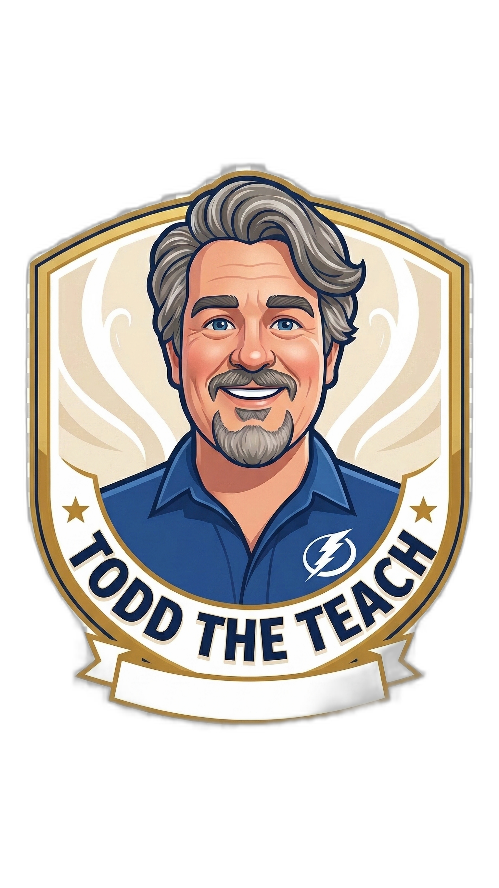

I'm Todd Doane. I rapidly absorb new technologies, fearlessly troubleshoot complex problems, and deliver results. Whether you need a full-time tech powerhouse or a freelance web refresh, I've got you covered.

Mastering tools faster than the documentation can print.
Diagnosing issues others give up on.
A resume tells you where I've been. Let me show you what I can do.
Technology moves fast. I move faster. I thrive on diving deep into new frameworks, systems, and paradigms and becoming proficient in record time.
I don't just patch symptoms; I find the root cause. My analytical approach breaks down complex systems to isolate and resolve persistent issues.
Requirements change. Priorities shift. I remain agile and focused, pivoting smoothly to ensure project success regardless of the circumstances.
Successfully migrated legacy systems with zero downtime, adapting to entirely new architectures on the fly.
Helped bridge the gap between technical and non-technical teams by translating complex issues into actionable solutions.
High-impact infrastructure and modernization projects delivered using the STAR method.
Situation: During the high-stakes merger between NationsBank and Bank of America, the organization needed to overhaul its global network infrastructure. The legacy environment consisted of mirrored Production and Development networks anchored by "old" core networks built on Bay Networks BCN routers.
Task: My objective was to migrate these legacy cores to a modern OSPF-based "new" core, ultimately transitioning to a final 4 AS BGP core utilizing 7500 series Cisco routers. I was tasked with managing three concurrent core networks while ensuring the legacy infrastructure was decommissioned without impacting bank operations.
Action: Serving as a Bay Networks Router Expert, I oversaw network support for over 500,000 devices and thousands of routers/switches. I proactively identified and fixed complex routing issues arising from the interaction between legacy OSPF and new OSPF/BGP protocols, ensuring the "new-new" core remained stable during deployment.
Result: Led a 100% successful migration over a two-year period. I achieved the final shutdown of all legacy core networks with zero service interruptions caused by the migration to the production environment, while fixing 3 critical outages caused by non-migration issues.
Situation: Morgan Stanley’s global telecommunications infrastructure was heavily fragmented, lacking unified standards for its mission-critical trade floors and office locations.
Task: My objective was to architect a unified global communication infrastructure. This required standardizing on an E.164 global dial plan, migrating to SIP trunking, and integrating new trade-floor technologies.
Action: I authored the Flatten & Consolidation Solution Architecture Guide, which became the global blueprint for consolidation. I navigated significant cultural and communication barriers by identifying responsible parties across outsourced facilities and IT departments to transition equipment access. To ensure global adoption, I customized the delivery of technical standards, translating complex design principles into easily digestible analogies for diverse regional teams.
Result: Established the architectural principles and standards for global telecommunications consolidation. This remains one of my most significant professional achievements, providing the framework for scalable, secure global communication.
Situation: As a Voice Operations Engineer at the world’s largest hedge fund, I was tasked with managing mission-critical communication systems where high availability is non-negotiable.
Task: The objective was to migrate users to a unified Avaya voice system, decommission a legacy NEC key system, and integrate a new, state-of-the-art trade floor—all while maintaining 100% operational continuity.
Action: I applied Ray Dalio’s "The Principles" to treat every process as a "machine" designed for specific outcomes. When issues arose, I diagnosed whether the failure point was the "machine" (the process/technology) or the "person". To prevent recurrence, I implemented strict guardrails, refined the "machine" architecture, or "sorted" personnel to ensure the right talent was in the right role.
Result: Successfully delivered three major IT projects spanning 16 months. This included the legacy decommission, a Modular Messaging upgrade, and E911 service enhancements—all completed under budget with improved customer service and rapid team growth.
Situation: Target’s call centers in Arizona and Minneapolis, supporting approximately 1,500 agents, required a critical conversion to meet PCI compliance standards.
Task: I functioned as the Product Owner on an Agile Scrum team to design and implement a secure environment while simultaneously improving customer self-service capabilities.
Action: I developed a Java-based prototype for the IVR application. The key architectural breakthrough was tokenizing caller identification and authentication directly within the IVR. This design ensured that Personally Identifiable Information (PII) was never passed between the telecommunications infrastructure and the backend systems, significantly reducing the security risk and audit scope.
Result: Successfully redesigned and implemented two compliant contact centers. This enabled Target to maintain high self-service rates while ensuring 100% PCI compliance for over 1,500 agents.
Situation: Comcast’s Central U.S. region required a massive modernization of its contact center infrastructure, which at the time relied on legacy TDM technology.
Task: My objective was to migrate 7,500 agents across four sites to a high-capacity SIP trunking platform. The system needed to support 15,000 simultaneous calls with a target of 30% self-service and full redundancy.
Action: I architected the end-to-end SIP trunking implementation and call flow design. The core optimization involved engineering a dynamic routing logic that directed callers to the specific agent pool best equipped to handle their needs immediately. Additionally, I enhanced the self-service architecture to allow customers to resolve issues independently, bypassing the hold queue entirely.
Result: The transformation led to a 35% reduction in costs and a 12% increase in customer satisfaction (CSAT). These gains were driven primarily by the significant reduction in customer on-hold times and the increased efficiency of the self-service platform.
Situation: During the massive merger of SunTrust and BB&T to form Truist, the organization required a robust infrastructure to support mission-critical retail banking applications.
Task: My role was to serve as a design authority, ensuring that every infrastructure component was perfectly documented and met the strict compliance requirements of its assigned Tier. The goal was to enable automated environment buildouts rather than manual configuration.
Action: I developed high-fidelity architecture diagrams that served as the blueprint for automated deployments via ServiceNow. I mapped out complex integrations across AWS, VMware, and IBM Mainframe environments and meticulously documented dependencies for development, test, staging, pre-production, production, and disaster recovery (DR).
Result: Successfully orchestrated the design framework for stable, repeatable environments. By automating metadata capture and enhancing Visio templates, I reduced the documentation overhead for the Solutions Architecture team by 30%, directly accelerating the merger timeline.
Real-world examples of rapid modernization, AI-driven workflows, and proven results.
Calyx AI is an enterprise-grade, agentic AI platform designed to provide an automated "brand voice and technical governance" layer for modern documentation (Markdown, PDF). It acts as a safety "Calyx" (or hull) that secures content against stylistic inconsistencies, legal risks, and technical debt before it goes live.
From an engineering perspective, Calyx AI represents my deepest dive into Polyglot Serverless Architecture on Azure. It is a monorepo approach optimized for performance and cost. The transactional core is built on high-concurrency Java (Quarkus Native), providing <100ms cold starts, while the specialized intelligence engine and agentic workflows are built using Python (3.13 AsyncIO). The frontend dashboard uses React/TypeScript, all interconnected using Azure Event Grid and hosted via Azure Static Web Apps.
Completely redesigned the aesthetic and modernized the codebase using Antigravity AI. Developed a robust, automated Python script to seamlessly build and deploy the site from GitHub directly to cPanel, streamlining future updates with a reliable CI/CD pipeline.
Orchestrated a highly successful visual refresh and end-to-end server migration for QualityTester.shop using AI tools. Key results included massive improvements in SEO optimization, significantly faster mobile load times, and a complete overhaul of the mobile UI layout to ensure flawless rendering across all devices.
Built a comprehensive and robust database of industry jargon and acronyms, spanning multiple sectors including military, finance, and technology. Focused on structuring a highly reliable, easily navigable dataset to serve as an authoritative dictionary for professionals navigating complex terminologies.
Catch my interviews, tech breakdowns, and tutorials.
@toddtheteach7
Subscribe for deep dives into tech, healthy living tools, and rapid learning strategies.
Visit Channel →Professional Network
Connect with me for full-time opportunities, professional discussions, and collaborations.
Connect →Need to elevate your online presence? I offer targeted solutions to revamp your brand.
Is your website looking stuck in the 2010s? I'll completely modernize it with premium aesthetics, responsive layouts, and lightning-fast code.
Inquire NowA deep-dive analysis of your current website, SEO, and social footprints to identify exact areas holding back your growth.
Inquire NowStrategic setup for digital marketing, helping you leverage the right tools to attract and retain your target audience.
Inquire Now